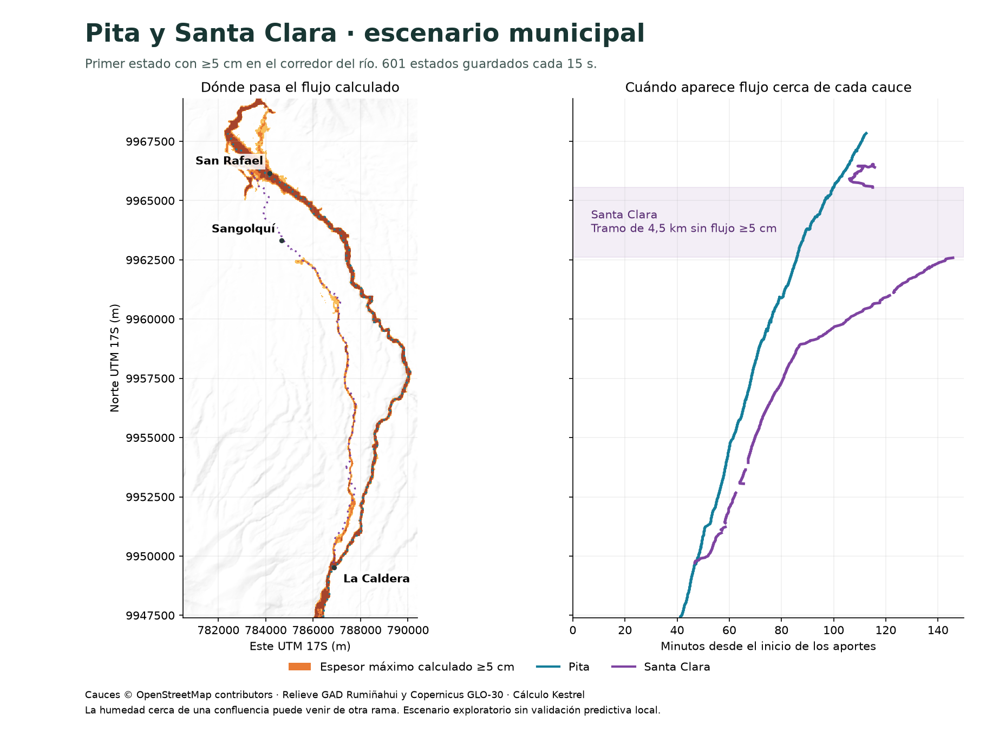

En esta corrida, el Pita es el cauce principal. Parte del flujo desborda hacia Santa Clara cerca de La Caldera. Las velocidades máximas en las dos secciones de La Caldera fueron 14,2 m/s en Pita y 7,5 m/s en Santa Clara. Son máximos locales y pueden ocurrir a distintos minutos.
Al comparar los dos cursos cerca de la latitud 0,362° S, el Pita mostró flujo al minuto 76 y Santa Clara al 105. La distancia recorrida por cada cauce es distinta. Más adelante, hay un tramo cartográfico de 4,5 km en Santa Clara sin flujo de al menos 5 cm durante los 150 minutos. Cerca de la unión con San Pedro aparece flujo calculado que podría provenir de otra rama.

El mapa oficial de amenaza del IG-EPN para la zona norte cubre ambos corredores. En el visor también puedes activar «Comparar con el mapa municipal» para consultar la referencia del GAD Rumiñahui.
| Sección | Primer estado con ≥5 cm | Velocidad máxima muestreada con ≥5 cm |
|---|---|---|
| La Caldera · Pita | 47.00 min | 14.2 m/s |
| La Caldera · Santa Clara | 48.50 min | 7.5 m/s |
| Sangolquí · El Ejido | Sin ≥5 cm en 150 min | — |
| Hacienda Megamaxi · Pita | 102.25 min | 6.3 m/s |
Los tiempos se cuentan desde las nueve entradas del modelo. Se muestrearon los 601 estados nativos con paso de salida de 15 s. El corredor cartográfico se examina en ventanas de 5 × 5 celdas de 30 m. La simulación usa el MDT municipal remuestreado a 30 m y el terreno regional fuera de su cobertura. El tramo sin flujo calculado es una limitación de este escenario exploratorio. La amenaza oficial y los tiempos publicados se mantienen como referencias independientes.
Descargar muestras de ambos cauces · Ver informe de la corrida